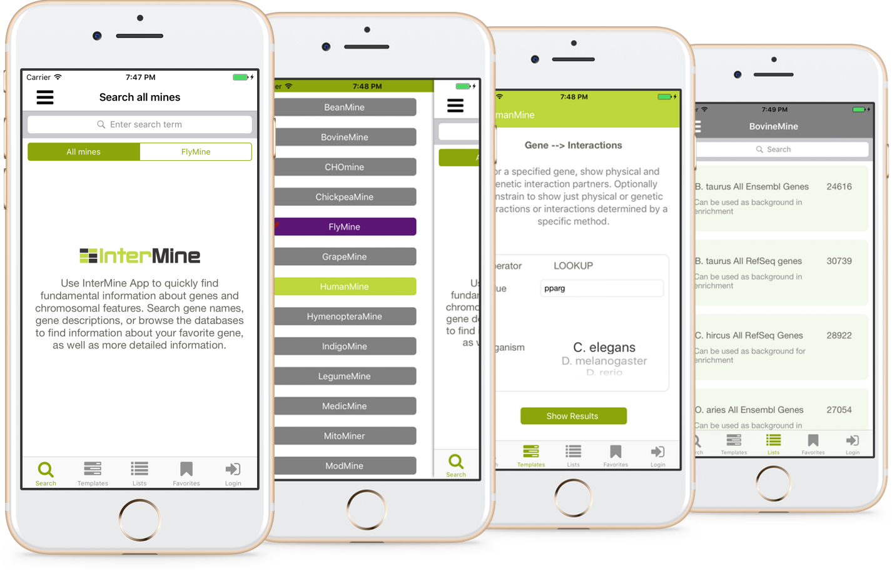

Intermine gene search on iOS device
The InterMine app allows you to search through integrated genomics data-sets at a variety of model-organism databases. Use structured search templates to find relationships between different data sets, inspect your lists of genes of interest and use them in further data analysis and find items of interest from a range of searches on your iPhone.

What can you do with the app?
- View all available Intermines
- Look for search term in all mines or one selected mine
- Refine your search results to make it more specific
- Use search templates
- View lists of genes
- Save your favorite search results to review them later
What to look forward for in future releases?
- Group saved search results and post them as lists
- More interactive search results
How to run the project?
- Download Xcode
- Clone the project from Github:
git clone https://github.com/joystate/intermine-ios.git - Build and run project in Xcode